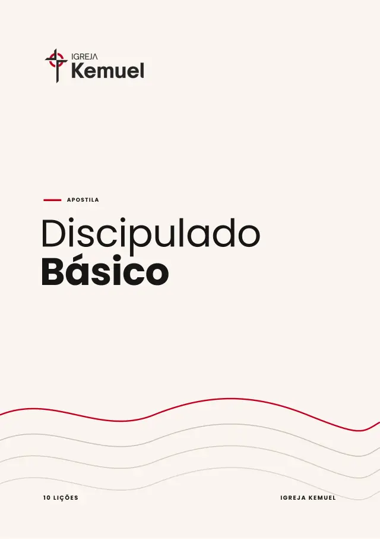
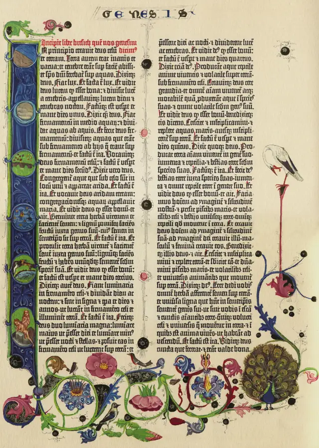
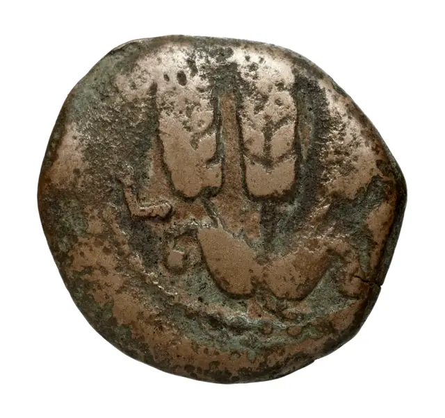
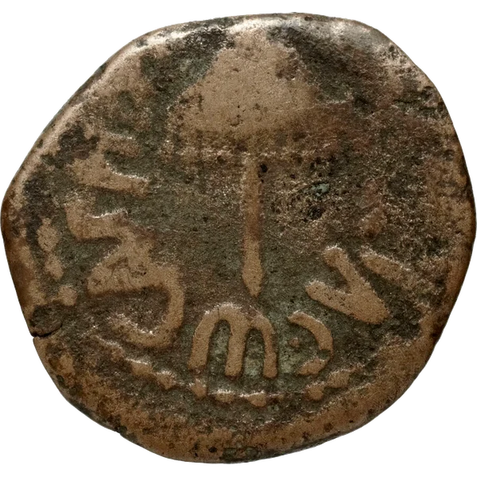

Horários
Bem-vindo à casa de Deus.
Uma comunidade de fé de portas abertas para você e sua família viverem mais perto de Deus.
- Quinta-feira19h30Culto
- Domingo18hCulto
Venha nos visitar Duas noites por semana. Uma casa aberta.
Quando nos
1- Quinta-feira19h30Culto
- Domingo18hCulto
Páginas 1 e 2: horários.
| Cultos | Horário |
|---|---|
| Quinta-feira | 19h30 |
| Domingo | 18h |
| Endereço | Av. Dr. José Holanda Montenegro, [número] · Centro · Iguatu - CE |
Abre o Google Maps em nova aba · número do endereço a confirmar
(*) [Observação sobre estacionamento ou acesso, a confirmar].
Toda semana,a mesma porta aberta.Venha como está.Fique como família.
[Texto curto sobre como é o culto, a confirmar com a igreja.] Sem roupa certa, sem cobrança na porta.
Falar com alguém antes da visitaWhatsApp · link de exemplo, sem número real
PRIMEIRA VISITA
PRIMEIRA VEZ?CHEGUE TRANQUILO.A GENTE EXPLICA.
Separamos as dúvidas mais comuns de quem vem pela primeira vez.
01 · CULTOComo é o culto e quanto tempo dura?
O culto dura cerca de [duração]. Tem [momentos do culto, ex.: louvor, oração e pregação].
02 · ROUPAPreciso me vestir de algum jeito?
[Ex.: Venha como se sentir bem. Não existe roupa certa.]
03 · CRIANÇASPosso levar meus filhos?
[Sim / Temos [nome do ministério infantil] durante o culto para crianças de [idade].]
04 · CHEGADAVou precisar me apresentar ou falar na frente?
[Ex.: Não. Você pode só participar. Se quiser, nossa equipe de recepção te recebe na entrada.]
05 · ESTACIONAMENTOOnde posso estacionar?
[Orientação de estacionamento.]
Ainda tem dúvida? Fale com a gente
WhatsApp · link de exemplo, sem número real
NOSSA HISTÓRIA
Quem somos
-
Capítulo 01 · Como tudo começou
Como tudo começou
[História da fundação: ano, quem começou, onde aconteciam os primeiros encontros e como a igreja chegou à Av. Dr. José Holanda Montenegro. Aguardando dados do pastor.]
-
Capítulo 02 · No que cremos
No que cremos
A Bíblia é a nossa única regra de fé e prática. Entendemos a igreja como uma comunidade formada por pessoas regeneradas e batizadas por imersão, que vivem a fé em Jesus Cristo.
A igreja local é autônoma e tem governo democrático. Reconhecemos a competência de cada alma diante de Deus, com liberdade de consciência religiosa, e defendemos a separação entre igreja e Estado.
Cremos no sacerdócio universal dos crentes: cada pessoa pode se aproximar de Deus e participar do serviço cristão. Caminhamos em cooperação com outras igrejas de mesma fé e ordem, somando esforços na missão.
-
Capítulo 03 · Quem somos hoje
Quem somos hoje
“Somos uma igreja bíblica, acolhedora, contemporânea, presente na cidade, evangelística. Queremos levar o evangelho da salvação às famílias perdidas e a mensagem de consolo aos cansados e oprimidos. E, como parte da Igreja de Cristo, vê-la restaurada em toda a sua plenitude, sob a autoridade do Espírito Santo, nestes tempos proféticos…”
Hoje nos reunimos às quintas-feiras, às 19h30, e aos domingos, às 18h.
-
Capítulo 04 · O próximo capítulo
O próximo capítulo
Na Kemuel, há lugar para servir como membro, voluntário, líder, obreiro e pastor, conforme os dons e o chamado de cada pessoa, com preparo e acompanhamento da igreja. Esse caminho começa no Discipulado: aprender a fé, crescer em comunidade e descobrir como servir a Deus servindo pessoas.
Use as setas para escolher um capítulo. Pressione Enter ou Espaço para ler.
Reflexões para levar a fé aos outros dias da semana.
05Reflexões para começarEscolha um tema e leia em poucos minutos
 Amor ao próximo
Amor ao próximoQuem é o meu próximo?
Um especialista na lei quis uma definição. Jesus respondeu com uma história que ainda tira a gente do lugar.
2 min de leitura Chamado
ChamadoDeixaram as redes
Jesus chamou pescadores no meio do expediente. O chamado de Deus costuma chegar assim, no meio da vida comum.
2 min de leitura Escrituras
EscriturasO que os Manuscritos do Mar Morto nos contam
Uma descoberta feita por pastores no deserto ajudou a mostrar o cuidado com que a Bíblia foi copiada ao longo dos séculos.
2 min de leitura Palavra
PalavraUma lâmpada para os meus pés
A Bíblia não promete iluminar a estrada inteira de uma vez. Ela ilumina o próximo passo, e isso já é muito.
2 min de leitura Fé
FéQuando a tempestade não passa
Há dias em que a gente ora e o vento continua forte. Uma noite no mar da Galileia mostra onde fica a nossa paz.
2 min de leitura
Materiais
Estude a PALAVRAno seu RITMO.
Guias, estudos e planos de leitura gratuitos para baixar, imprimir e compartilhar.
Ver todos os materiais
discipuladoGUIA · Nº 01
Discipulado Básico
Dez lições sobre as bases da fé cristã, para novos na fé.
Baixar PDFPDF · 835 KBCrédito da imagem
Capa da apostila fornecida pela igreja. Versão de exemplo, revisão pendente.

evangelhosExemploPLANO DE LEITURA · Nº 02
Os Evangelhos em 30 dias
Um roteiro diário para ler Mateus, Marcos, Lucas e João em um mês.
Baixar PDFPDFCrédito da imagem
Bíblia de Gutenberg, Gênesis, exemplar da Staatsbibliothek zu Berlin, c. 1455. Domínio público (PD-Art), via Wikimedia Commons.

generosidadeExemploESTUDO · Nº 03
Generosidade: o que a Bíblia ensina sobre dar
Um estudo sobre generosidade, da oferta da viúva aos dias de hoje.
Baixar PDFPDFCrédito da imagem
Prutah de bronze de Agrippa I, século I, BnF, AA.GR.12966, fotografia da face com três espigas. Domínio público, via Wikimedia Commons.
Contribua
A obra cresce com cada um de nós.
Quando você contribui, a igreja abre as portas, sustenta quem serve e alcança quem ainda não conhece Jesus. Não é sobre o tamanho da oferta. É sobre um coração que participa.

Ela deu duas moedinhas. E Jesus disse que ela deu mais do que todos.
Adoração
Contribuir é dizer a Deus que Ele vem primeiro.
Provérbios 3.9
Alegria
Deus se agrada de quem dá de coração, não por obrigação.
2 Coríntios 9.7
Comunhão
Na igreja do começo, cada um repartia o que tinha, e ninguém ficava sem.
Atos 2.44-45
Onde estamos investindo
Projetos que estão saindo do papel.
Escolha um projeto ou contribua para a igreja como um todo.
Exemplo
Novos instrumentos para o louvor dos cultos.
R$ 6.400 de R$ 10.000
Exemplo
Salas mais seguras e acolhedoras para as crianças.
R$ 11.400 de R$ 30.000
Exemplo
Mais vagas para quem chega aos cultos.
R$ 9.600 de R$ 80.000
Atualizado em 10/11/2026
Acompanhe
@igrejakemueliguatu
Avisos, fotos e o dia a dia da igreja.
Seguir no Instagram (abre em nova aba)YouTube
@Igreja.kemuelsede
Cultos e mensagens para assistir quando quiser.
Assistir no YouTube (abre em nova aba)